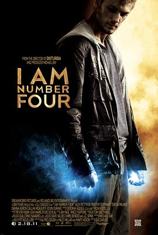

6.0
关键第四号
I Am Number Four
2011
美国
评分 6.0
导演:
D·J·卡卢索（D.J. Caruso）
演员:
亚历克斯·帕蒂弗 / 蒂莫西·奥利芬特 / 泰莉莎·帕尔墨 / 迪安娜·阿格隆 / 凯文·杜兰 / 卡兰·麦克奥利菲 / 杰克·阿贝尔
类型:
动作,惊悚,科幻
剧情简介
浩瀚宇宙中，洛瑞恩星的九个孩子肩负着重建家园的使命，却被邪恶的玛卡人追杀。三人已亡，他们只能按照编号顺序被猎杀。第四号——约翰·史密斯（亚历克斯·帕蒂弗饰）成为下一个目标。为了生存，他与守护者亨利（蒂莫西·奥利芬特饰）隐姓埋名，四处迁徙。他们定居在名为天堂镇的美国小城。表面平静的高中生活掩藏着紧张气息——约翰试图过上普通青少年的日子，然而他的手掌开始发光、力量逐渐觉醒：能操控能量、跳跃如鹰、感知敌意。新的身份与力量让他既恐惧又好奇。在学校，他遇见了摄影师莎拉（迪安娜·阿格隆饰），一个同样孤独、渴望自由的女孩。两人的感情在阳光与暗影之间萌发，也让约翰第一次意识到“人类”身份的温度。然而，玛卡人的侦察舰已悄然逼近。每一次电闪雷鸣，都可能是战斗的前奏。影片的高潮在于力量的觉醒与信念的抉择。当亨利为保护他而牺牲，约翰不再逃亡，而是携同样来自洛瑞恩的第六号（泰莉莎·帕尔墨饰）并肩作战。黑夜中的荒野、能量爆裂的天空、巨兽狂奔的废墟，构成了一场壮烈的视觉交响。导演用炫目的光效与节奏紧凑的剪辑将青春成长与科幻宿命融合在一起：这是一个关于“选择与身份”的故事——当他被编号、被追杀、被逼入绝境，约翰终于明白自己不仅是“第四号”，更是连接过去与未来的希望。